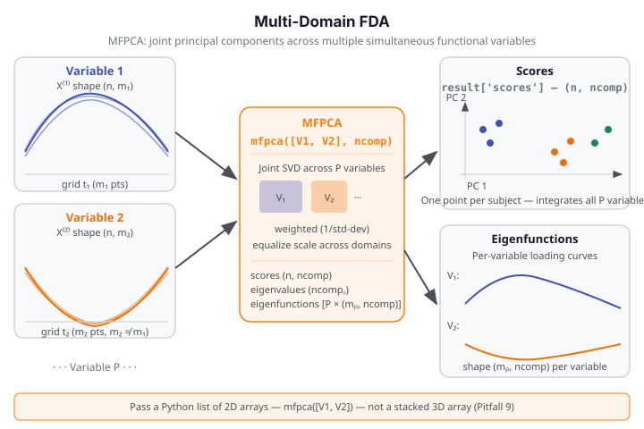

Multi-Domain FDA¶
Multi-Domain FDA handles subjects observed simultaneously on multiple functional
variables — for example, a patient with temperature, pressure, and flow curves measured
at the same time points (or different ones). Multivariate Functional PCA (MFPCA)
extracts shared principal components across all domains, giving a single low-dimensional
score per subject that summarizes variation across every variable. FAMM (Functional
Additive Mixed Models, fdars.famm) adds a mixed-effects structure for repeated-measures
designs where each subject contributes several visits or time points.
| Method | fdars function |
Key output |
|---|---|---|
| Multivariate FPCA | mfpca |
scores (n, ncomp), eigenfunctions (list), eigenvalues |
| Longitudinal FLMM | dense_flmm |
fitted (n_total, m), random_effects, converged |
| Multi-dim FLMM | multi_famm |
n_dims, stacked_fitted, components (list) |
| Multi-domain container | multi_fdata_from_components |
PyMultiFunData (standalone only) |

When to use¶
MFPCA is the right choice when subjects are co-observed on several functional variables and you want to extract the jointly dominant modes of variation. Unlike running separate FPCAs per variable, MFPCA respects the correlation structure across variables and returns a single score matrix summarising all domains together. Use it when:
- the variables are conceptually coupled (e.g. temperature + pressure from the same patient);
- the evaluation grids can differ in length across variables (
mfpcahandles unequal \(m_p\)); - you want to feed scores into downstream clustering, regression, or outlier detection.
dense_flmm (Functional Linear Mixed Model) is the right choice for longitudinal repeated-measures designs where each subject contributes several curves across visits. The model decomposes observed curves into a fixed mean function, subject-level random effects, and random slopes — capturing individual deviation trajectories over time.
multi_famm extends this to multiple co-observed functional dimensions per subject in a
longitudinal design. If subjects have \(D\) functional outcomes measured repeatedly,
multi_famm fits per-dimension FLMM models and packages the results together.
Quick rule: Use mfpca for cross-sectional multi-variable data (one visit per subject,
multiple variable types). Use dense_flmm for longitudinal data with a single functional
outcome. Use multi_famm when both conditions hold simultaneously.
Choosing ncomp
Inspect the eigenvalues array from mfpca. The eigenvalues measure the joint variance
explained by each multivariate component. Choose the smallest ncomp where the cumulative
sum of eigenvalues covers 85–90% of total variance:
MFPCA — Multivariate Functional PCA¶
Theory¶
Let subject \(i\) be observed on \(P\) functional variables \(X_i^{(1)}, \ldots, X_i^{(P)}\), each evaluated on its own grid of length \(m_p\). MFPCA seeks \(K\) multivariate eigenfunctions \(\boldsymbol{\phi}_k = (\phi_k^{(1)}, \ldots, \phi_k^{(P)})\) such that the projections
capture maximum joint variance. The scores \(s_{ik}\) are directly comparable across subjects because they integrate information from all domains simultaneously.
import numpy as np
from fdars.spm import mfpca
rng = np.random.default_rng(42)
n, m1, m2 = 20, 30, 25 # different grid lengths per variable
t1 = np.linspace(0, 1, m1)
t2 = np.linspace(0, 1, m2)
V1 = np.array([np.sin(2 * np.pi * t1 + rng.uniform(0, 0.3)) for _ in range(n)])
V2 = np.array([np.cos(np.pi * t2 + rng.uniform(0, 0.3)) for _ in range(n)])
# Pass a LIST of 2D arrays — one per variable
result = mfpca([V1, V2], ncomp=2)
scores = np.asarray(result["scores"])
evals = np.asarray(result["eigenvalues"])
print(f"scores shape: {scores.shape}")
print(f"eigenfunctions: {[np.asarray(ef).shape for ef in result['eigenfunctions']]}")
print(f"n components: {len(evals)}")
print(f"eigenvalues: {evals.round(4).tolist()}")
print("FDARS_FENCE_OK")
scores shape: (20, 2) eigenfunctions: [(30, 2), (25, 2)] n components: 2 eigenvalues: [31.2827, 23.6467] FDARS_FENCE_OK
Parameters — mfpca
| Parameter | Type | Default | Description |
|---|---|---|---|
variables |
list of ndarray (n, m_p) |
— | One 2D array per functional variable; grids may differ in length |
ncomp |
int |
5 |
Number of multivariate principal components |
weighted |
bool |
True |
Normalize each variable by 1/std before joint SVD |
Returns — mfpca
| Key | Shape / Type | Description |
|---|---|---|
scores |
(n, ncomp) |
Joint MFPCA scores — one row per subject |
eigenfunctions |
list of P arrays (m_p, ncomp) |
Per-variable loading functions |
eigenvalues |
(ncomp,) |
Joint eigenvalues (use len(eigenvalues) for component count) |
means |
list of P arrays (m_p,) |
Per-variable mean functions |
scales |
(P,) |
Scale factors used for weighted normalization |
grid_sizes |
list of P ints | Number of evaluation points per variable |
The scores matrix is (n, ncomp) — one row per subject, one column per multivariate
principal component. Derive the number of retained components from
len(result['eigenvalues']) — there is no n_comp key in the mfpca result.
Pass a list, not a stacked array
mfpca([V1, V2], ncomp=2) works; mfpca(np.stack([V1, V2]), ncomp=2) raises
a ValueError. Each variable is a separate 2D array in a Python list.
MFPCA scores visualization¶
import numpy as np
from docs_fig import fig, render
from fdars.spm import mfpca
rng = np.random.default_rng(42)
n, m1, m2 = 30, 30, 25
t1 = np.linspace(0, 1, m1)
t2 = np.linspace(0, 1, m2)
# Simulate two groups with different mean levels
V1_a = np.array([np.sin(2 * np.pi * t1 + rng.uniform(0, 0.2)) for _ in range(15)])
V1_b = np.array([np.cos(2 * np.pi * t1 + rng.uniform(0, 0.2)) for _ in range(15)])
V2_a = np.array([np.cos(np.pi * t2 + rng.uniform(0, 0.2)) + 1.0 for _ in range(15)])
V2_b = np.array([np.sin(np.pi * t2 + rng.uniform(0, 0.2)) - 1.0 for _ in range(15)])
V1 = np.vstack([V1_a, V1_b])
V2 = np.vstack([V2_a, V2_b])
labels = np.array([0] * 15 + [1] * 15)
result = mfpca([V1, V2], ncomp=2)
scores = np.asarray(result["scores"])
palette = ["#3f51b5", "#e8710a"]
f, ax = fig(figsize=(6.5, 5.0))
for g, color in enumerate(palette):
idx = labels == g
ax.scatter(scores[idx, 0], scores[idx, 1], color=color, s=50, alpha=0.8, label=f"group {g}")
ax.set(title="MFPCA: score scatter across 2 components",
xlabel="Component 1", ylabel="Component 2")
ax.legend()
print(render(f))
print("FDARS_FENCE_OK")
dense_flmm — Functional Linear Mixed Model¶
Theory¶
The Functional Linear Mixed Model (FLMM) decomposes a longitudinal functional response \(Y_{ij}(t)\) (observation \(j\) from subject \(i\)) as:
where \(\mu(t)\) is the global mean function, \(\boldsymbol{\beta}(t)\) is the matrix of fixed-effects coefficient functions (one per covariate), \(b_i(t)\) is the subject-level random effect function, and \(\varepsilon_{ij}(t)\) is i.i.d. functional noise. The model is estimated via REML-EM iteration.
from fdars.famm import dense_flmm
result = dense_flmm(data, subject_ids, covariates=None, ncomp=3, max_iter=50, tol=1e-10)
import numpy as np
from fdars.famm import dense_flmm
rng = np.random.default_rng(42)
n_subj, n_visits, m = 8, 3, 20
n_total = n_subj * n_visits
t = np.linspace(0, 1, m)
# Stack all visits: (n_total, m)
data = np.array([
np.sin(2 * np.pi * t + rng.uniform(0, 0.4)) + 0.1 * rng.standard_normal(m)
for _ in range(n_total)
])
# subject_ids: 0-based, int64, length n_total
subject_ids = np.repeat(np.arange(n_subj, dtype=np.int64), n_visits)
flmm = dense_flmm(data, subject_ids, ncomp=2)
print(f"n_subjects: {flmm['n_subjects']}")
print(f"converged: {flmm['converged']}")
print(f"n_iter: {flmm['n_iter']}")
print(f"fitted shape: {np.asarray(flmm['fitted']).shape}")
print("FDARS_FENCE_OK")
n_subjects: 8 converged: False n_iter: 50 fitted shape: (24, 20) FDARS_FENCE_OK
Parameters — dense_flmm
| Parameter | Type | Default | Description |
|---|---|---|---|
data |
ndarray (n_total, m) |
— | All observations stacked (rows = curves across all subjects and visits) |
subject_ids |
ndarray (n_total,) int64 |
— | 0-based subject index mapping each row to a subject |
covariates |
ndarray (n_total, p) or None |
None |
Fixed-effect covariate matrix; None means intercept-only |
ncomp |
int |
3 |
Number of FPCA components for random-effects basis |
max_iter |
int |
50 |
Maximum REML-EM iterations |
tol |
float |
1e-10 |
Convergence tolerance on log-likelihood |
dense_flmm takes plain numpy arrays — NOT a PyMultiFunData handle
dense_flmm(data_2d, subject_ids) is correct, where data_2d is a plain
(n_total, m) numpy array. Passing a PyMultiFunData object raises a TypeError.
Similarly, multi_famm takes a list of 2D arrays, not a handle.
Returns — dense_flmm (14 keys)
| Key | Shape / Type | Description |
|---|---|---|
sigma2_eps |
float |
Estimated noise variance |
ncomp |
int |
Number of FPCA components used |
n_subjects |
int |
Number of distinct subjects |
n_iter |
int |
EM iterations performed |
converged |
bool |
Whether EM converged within max_iter |
mean_function |
(m,) |
Estimated global mean function \(\mu(t)\) |
random_variance |
(m,) |
Pointwise variance of the random effect process |
sigma2_u |
(ncomp,) |
Variance of random effect scores per component |
sigma2_slope |
(ncomp,) |
Variance of random slope per component |
eigenvalues |
(ncomp,) |
Eigenvalues of the random-effect covariance |
beta_functions |
(p, m) |
Fixed-effect coefficient functions (p=0 if no covariates) |
random_effects |
(n_subjects, m) |
Subject-level random effect curves \(b_i(t)\) |
fitted |
(n_total, m) |
Fitted curves for all observations |
residuals |
(n_total, m) |
Residuals data - fitted |
Convergence
On small datasets (e.g. \(n_{\text{total}} \leq 30\)), dense_flmm may not converge
within max_iter=50 at the tight default tolerance. Check result['converged']
before using fitted values. If False, try raising max_iter=200 or loosening
tol=1e-6. Inspect result['n_iter'] to see how many iterations were performed.
multi_famm — Multi-Dimensional FLMM¶
Theory¶
multi_famm extends dense_flmm to settings where each subject's observation at each
visit spans \(D\) co-observed functional dimensions. The model fits per-dimension FLMMs
and returns the results together with stacked arrays for cross-dimension comparison.
from fdars.famm import multi_famm
result = multi_famm(data_list, subject_ids, covariates=None, ncomp=3, max_iter=50, tol=1e-10)
import numpy as np
from fdars.famm import multi_famm
rng = np.random.default_rng(42)
n_subj, n_visits, m = 6, 3, 20
n_total = n_subj * n_visits
t = np.linspace(0, 1, m)
# Two functional dimensions, both (n_total, m)
D1 = np.array([np.sin(2 * np.pi * t + rng.uniform(0, 0.4)) for _ in range(n_total)])
D2 = np.array([np.cos(np.pi * t + rng.uniform(0, 0.4)) for _ in range(n_total)])
subject_ids = np.repeat(np.arange(n_subj, dtype=np.int64), n_visits)
# Pass a list of 2D arrays — one per dimension
mf = multi_famm([D1, D2], subject_ids, ncomp=2)
print(f"n_dims: {mf['n_dims']}")
print(f"stacked_fitted: {np.asarray(mf['stacked_fitted']).shape}")
print(f"n component dicts: {len(mf['components'])}")
print("FDARS_FENCE_OK")
n_dims: 2 stacked_fitted: (36, 20) n component dicts: 2 FDARS_FENCE_OK
Parameters — multi_famm
| Parameter | Type | Default | Description |
|---|---|---|---|
data_list |
list of ndarray (n_total, m) |
— | One 2D array per functional dimension; all must share the same n_total and m |
subject_ids |
ndarray (n_total,) int64 |
— | 0-based subject index, shared across dimensions |
covariates |
ndarray (n_total, p) or None |
None |
Fixed-effect covariate matrix |
ncomp |
int |
3 |
Number of FPCA components per dimension |
max_iter |
int |
50 |
Maximum EM iterations per dimension |
tol |
float |
1e-10 |
Convergence tolerance |
Returns — multi_famm (4 keys)
| Key | Shape / Type | Description |
|---|---|---|
n_dims |
int |
Number of functional dimensions |
stacked_fitted |
(n_total * n_dims, m) |
Fitted curves for all observations and dimensions, stacked |
stacked_residuals |
(n_total * n_dims, m) |
Residuals, stacked in the same order |
components |
list of dict |
Per-dimension FLMM results; each dict has the same 14 keys as dense_flmm |
PyMultiFunData — Standalone Container¶
multi_fdata_from_components (in fdars.multi_fdata) constructs a PyMultiFunData
object that bundles multiple functional variables together with their evaluation grids:
from fdars.multi_fdata import multi_fdata_from_components
mfd = multi_fdata_from_components(data_list, argvals_list)
# mfd.n_obs -> number of observations
# mfd.n_components -> number of functional variables
PyMultiFunData is a standalone container in fdars-core 0.33
As of fdars-core 0.33, PyMultiFunData is a standalone data container only.
No function in fdars.famm or fdars.spm accepts a PyMultiFunData handle as
input — dense_flmm and multi_famm both take plain numpy arrays (or lists of
arrays). Use PyMultiFunData for inspection (mfd.n_obs, mfd.n_components) or
as a structured intermediate object, not as a function argument.
Result Interpretation¶
Reading eigenfunctions from mfpca¶
The eigenfunctions key is a list of P arrays, one per variable. Each array has
shape (m_p, ncomp) — so eigenfunctions[p][:, k] gives the loading function of the
\(k\)-th multivariate component on variable \(p\). Plot these to understand which part of each
variable's domain a given MFPCA component responds to most.
# eigenfunction of component 0 on variable 1
ef_var1_comp0 = np.asarray(result["eigenfunctions"][1])[:, 0] # shape (m_2,)
Reading stacked_fitted and random_effects from dense_flmm¶
fitted (shape (n_total, m)) gives reconstructed curves for every visit. Row order
matches the input data array row order — if subject_ids = [0, 0, 0, 1, 1, 1, ...]
then fitted[0:3] are the three visits for subject 0.
random_effects (shape (n_subjects, m)) gives the subject-level deviation curve \(b_i(t)\).
Subjects with a large ||b_i||_{L^2} are far from the population mean trajectory.
Methods available in R but not yet in Python¶
The full multiFAMM R package uses a tensor-product basis approach for multi-domain
functional additive mixed models. In fdars, multi_famm uses per-dimension FLMM fitting
instead — the tensor-product cross-variable interaction structure is not replicated.
See also¶
- Clustering — cluster subjects using MFPCA scores as features
- Functional Statistics — single-domain FPCA (the building block)
- Outlier Detection — magnitude-shape outlier detection applicable to MFPCA scores
- Analyze index
References¶
- Happ, C. and Greven, S. (2018). Multivariate functional principal component analysis for data observed on different (dimensional) domains. Journal of the American Statistical Association 113(522), 649–659.
- Scheipl, F., Staicu, A.-M. and Greven, S. (2015). Functional additive mixed models. Journal of Computational and Graphical Statistics 24(2), 477–501.